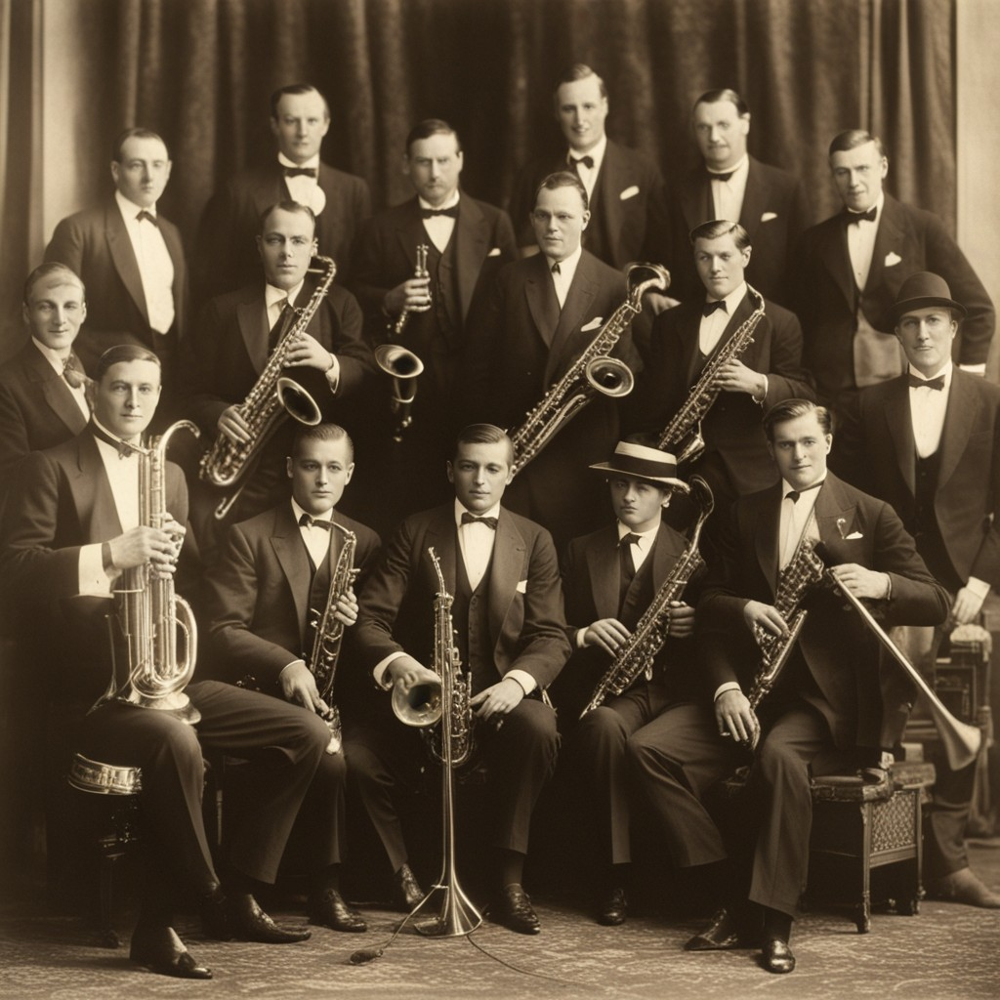

The Roaring Twenties
The instant you decide to travel to the Roaring Twenties, the timepiece reacts with a vibrating intensity, and the urban soundscape shifts. The cacophony of the modern city transforms into the melodic rhythms of jazz, and you're transported to a world of glitz and glamour. The city streets are alive with flappers in sequined dresses, charismatic gangsters, and lively jazz bands. It's a whirlwind of excitement and indulgence. Choosing to be part of a jazz band, you feel the intoxicating allure of music, the freedom to express yourself in a cacophony of sounds. Deciding to invest in the stock market, you're met with the thrilling energy of Wall Street, where your knowledge of the future offers the promise of vast wealth. The Roaring Twenties is a time of unbridled hedonism, and you're now a part of its mesmerizing tapestry.

Join a Jazz Band:
You become a part of the jazz scene, playing saxophone and experiencing the glitz
and glamour.
OR
Music might bring you more joy than you think...